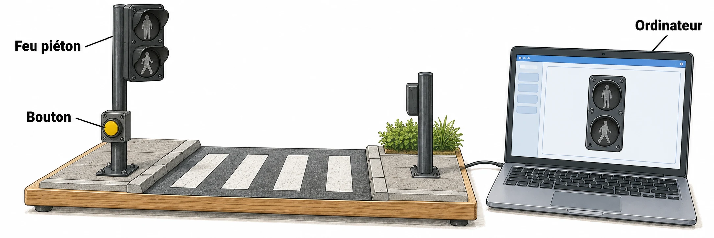

OBSERVER · EXPÉRIMENTER · EXPLIQUER
Mon programme de feu piéton
Observe un feu et change la durée. Puis construis ton propre programme.

✎ Garde ta feuille à côté de toi.Prévois sur papier → manipule → observe → rédige sur papier.
À toi de construire le programme
Crée les deux états du feu et un événement bouton. Programme le comportement demandé par la fiche. Teste T1 à T4, puis une durée de 0 s. Enregistre le projet sur l’ordinateur.
Utilise Scratch installé sur le poste, ou la version en ligne indiquée par le professeur. Aucun compte personnel nécessaire pour travailler sans partage.
Des observations pour expliquer
- Q1–Q2 : prépare les instructions sur papier, puis programme dans Scratch.
- Q3–Q4 : teste ton programme, relève les résultats et explique une limite.
Appuie ton explication sur une valeur, un changement observé ou une comparaison. Distingue ce que montre le modèle et ce qui reste à vérifier.